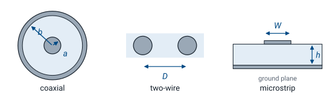
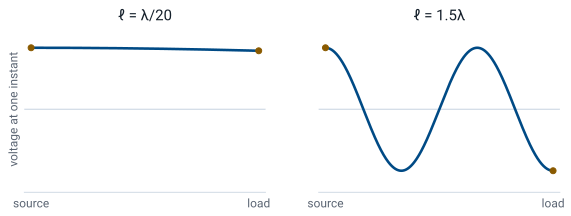
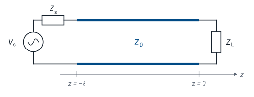
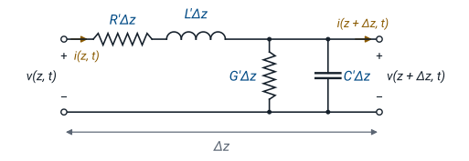

L3 - The Lumped-Element Model#
The Lumped-Element Model
Today we model a pair of wires as a circuit in its own right.
Lesson 3 · Module 1: Foundations · Maj Ellis · Dr. Neil Rogers
Learning Objectives
- I can describe the origin of the transmission line equation, understand the method of developing a solution, and interpret the solution.
Lesson 2 gave us the language of fields and phasors. Today we apply it to the most common structure in electrical engineering: two conductors that carry a signal from one place to another. In every circuit course so far, a wire has been an ideal connection, with the same voltage at both ends at every instant. That assumption holds only when the wire is short compared to a wavelength. This lesson shows when it fails and replaces it with a model that does not: the lumped-element model, a chain of tiny circuits that each obey Kirchhoff’s laws. We then shrink each circuit to zero length and derive the telegrapher’s equations, which describe the voltage and current at every point on the line, and the rest of Module 1 solves them.
Where We Were
Lesson 2: phasors. A sinusoid is the real part of a phasor times \(e^{j\omega t}\):
Wavelength is the distance a wave travels in one period:
Lesson 2 established two tools we need today. A phasor \(\widetilde{V}\) carries the amplitude and phase of a sinusoid, and multiplying by \(e^{j\omega t}\) and taking the real part recovers the signal in time. A wave that moves at phase velocity \(v_p\) covers one wavelength \(\lambda\) in one period, so \(\lambda = v_p/f\). In free space \(v_p = c = 3 \times 10^8\) m/s. In a cable the wave moves slower, because a dielectric fills the space around the conductors; in RG-58 coaxial cable it moves at about two-thirds of \(c\), or \(2 \times 10^8\) m/s. We use that number throughout this lesson.
What a Transmission Line Is
A transmission line is a structure that guides an electromagnetic signal or power from one place to another.
Two conductors, separated by a dielectric, carry the signal and its return.

A transmission line is a structure intended to transport electromagnetic signals or power. The three cross sections above are the ones you will see most often. Coaxial cable puts one conductor of radius \(a\) inside a cylindrical shield of radius \(b\), with a dielectric between them; it connects nearly every piece of RF test equipment you will use, including the network analyzer in the Lesson 15 lab. A two-wire line holds two parallel wires a distance \(D\) apart; older television antenna lead and twisted-pair Ethernet cable are both two-wire lines. Microstrip places a metal strip of width \(W\) on a dielectric substrate of thickness \(h\) above a ground plane, and it is how signals move across a printed circuit board.
Each one has two conductors. The current flows out along one and returns along the other, and the voltage between them is the signal. The geometry differs, but the same model describes all three, which is why we can develop it once and apply it everywhere.
Electrical Length
Physical length \(\ell\) matters only as a fraction of a wavelength, \(\ell/\lambda\).
Phase delay from one end to the other:

A signal launched at the source takes time to reach the load. In that time the source keeps changing, so at any one instant the voltage at the two ends of the line differs. What matters is not the length in meters but the electrical length, the length measured in wavelengths. A line of length \(\ell\) delays the signal by a phase of \(\Delta\phi = 2\pi\ell/\lambda\), or \(360^\circ\) for every wavelength.
The figure shows the voltage along two lines at the same instant. On a line \(\lambda/20\) long, the phase delay is \(18^\circ\), and the voltage at the load is within 5% of the voltage at the source. On a line \(1.5\lambda\) long, the voltage completes one and a half cycles between the two ends, and the source and load are \(180^\circ\) out of phase.
When Circuit Theory Holds
Rule of thumb: treat a connection as an ideal wire only when
Longer than that, the phase delay exceeds \(36^\circ\), and we need the transmission line model.
Kirchhoff’s voltage law assumes that a wire has the same voltage everywhere along it at a given instant. The electrical-length figure shows exactly when that assumption is safe. As a rule of thumb, a connection shorter than \(\lambda/10\) behaves as an ideal wire, because the phase changes by less than \(36^\circ\) from one end to the other. Some designers use the stricter \(\lambda/20\); the cutoff is a judgment, not a law. Beyond it, the voltage varies along the line at each instant, and the line becomes a circuit element with its own behavior.
The same cable can be either. Whether a connection is “just a wire” depends on the frequency of the signal it carries, not on the connection itself.
A Power Line and a Cable
The widget shows the voltage along a matched line at one instant, and the dials show the phase of the voltage at the source and at the load. Start with the 60 Hz power line. At 60 Hz the wavelength on an overhead line is \(\lambda = c/f = 5000\) km, so a 100 km line is \(0.02\lambda\) long, and the load lags the source by only \(7.2^\circ\). The whole line rises and falls together, which is why a power engineer can treat it as a pair of wires. Drag the length out to 1000 km, the length of the longest lines in service: the line reaches \(\lambda/5\) and \(72^\circ\), and at that scale power engineers do use the transmission line model. Now switch to the 1 GHz coaxial cable. The wavelength in the cable is 20 cm, so 1.1 m of cable holds five and a half wavelengths, the load lags the source by \(1980^\circ\), and at this instant the two ends are \(180^\circ\) out of phase. The two systems obey the same physics; only the frequency, and so the wavelength, changed. Use the sliders to find the frequency at which a 1 m cable crosses \(\lambda/10\).
Worked Example: 2 m of RG-58
Frequency |
\(\lambda\) in the cable |
\(\ell/\lambda\) |
Model |
|---|---|---|---|
1 kHz |
200 km |
\(1 \times 10^{-5}\) |
ideal wire |
10 MHz |
20 m |
0.1 |
borderline |
100 MHz |
2 m |
1 |
transmission line |
2.4 GHz |
8.3 cm |
24 |
transmission line |
Worked example — one cable, four frequencies
A 2 m length of RG-58 coaxial cable carries a signal at \(v_p = 2 \times 10^8\) m/s. The wavelength in the cable at each frequency is \(\lambda = v_p/f\):
At 1 kHz the cable is a hundred-thousandth of a wavelength, and circuit theory describes it exactly. At 10 MHz it reaches \(\lambda/10\), the edge of the rule of thumb. At 100 MHz it is one full wavelength long, and the voltage at the far end lags the source by a full cycle. At 2.4 GHz, the Wi-Fi band, the cable holds 24 wavelengths, and the signal at the load is 24 periods behind the source. The delay in time is the same at every frequency:
What changes is how many periods fit inside that 10 ns.
Source, Line, and Load

The load sits at \(z = 0\); the source at \(z = -\ell\).
The line connects two ports, and \(Z_0\) describes it.
Every problem in this chapter has the same three parts: a source with voltage \(V_s\) and internal impedance \(Z_s\), a line of length \(\ell\), and a load impedance \(Z_L\). The line is a two-port: it has an input pair of terminals and an output pair, and what happens between them is what we want to model. We place the load at \(z = 0\) and the source at \(z = -\ell\), so the positive \(z\) direction points from the source toward the load. This convention matches the textbook and every lesson that follows. The quantity \(Z_0\) on the line is its characteristic impedance, which Lesson 5 derives from the model we build today.
Cut the Line Into Short Sections
Divide the line into sections of length \(\Delta z\), each much shorter than a wavelength:
Each section is short enough for Kirchhoff’s laws.
Write Kirchhoff’s laws for one section, then let \(\Delta z \to 0\).
Circuit theory fails on the whole line, but it still works on a short enough piece of it. That observation is the entire method. We divide the line into sections of length \(\Delta z\), each one much shorter than a wavelength, so that the voltage and current are effectively constant across each section. Within a section, Kirchhoff’s laws hold. The line is then a long chain of identical small circuits, and each one hands its output to the next as its input. We write Kirchhoff’s laws for one section, then let the section shrink to zero length, and the result describes every point on the line.
The question is what goes inside each section. A short piece of any two-conductor line stores energy in the magnetic field around its current, stores energy in the electric field between its conductors, and loses a little power in its metal and its dielectric. Four circuit elements capture those four effects.
The Lumped-Element Section

The figure shows one section. Two elements sit in series along the conductor, because they act on the current flowing down the line: \(R'\Delta z\) and \(L'\Delta z\). Two elements sit in shunt between the conductors, because they act on the voltage across the line: \(G'\Delta z\) and \(C'\Delta z\). The primes mark per-unit-length quantities: \(L'\) is inductance per meter, so a section of length \(\Delta z\) has inductance \(L'\Delta z\). Doubling the length of the section doubles every element in it, which lets us take \(\Delta z\) as small as we like.
What Each Element Models
Element |
Units |
Physical origin |
|---|---|---|
\(R'\) |
\(\Omega\)/m |
resistance of the metal conductors |
\(L'\) |
H/m |
magnetic field around the current |
\(G'\) |
S/m |
leakage current through the dielectric |
\(C'\) |
F/m |
electric field between the conductors |
Each element comes from a physical effect in the line.
\(L'\) comes from the magnetic field that the current sets up around the conductors. That field stores energy, and an inductor is the circuit element that stores energy in a magnetic field.
\(C'\) comes from the electric field between the conductors. The two conductors carry equal and opposite charge along their length, which is exactly the arrangement of a capacitor.
\(R'\) comes from the finite conductivity of the metal. The current flowing down the conductors dissipates power, and at high frequency the current crowds toward the surface of the conductor, which raises \(R'\) as frequency increases.
\(G'\) comes from the imperfect dielectric. A real insulator conducts a small current from one conductor to the other, and that leakage dissipates power.
\(G'\) is not \(1/R'\). The two describe different materials, in different places, and they are independent.
Typical Values: RG-58
Parameter |
Value |
|---|---|
\(L'\) |
\(259\ \text{nH/m}\) |
\(C'\) |
\(96.8\ \text{pF/m}\) |
\(R'\), \(G'\) |
small at low frequency |
A 2 m length carries \(518\ \text{nH}\) and \(194\ \text{pF}\) in total.
The numbers above are the inductance and capacitance per meter of RG-58, a common \(50\ \Omega\) coaxial cable with a polyethylene dielectric. Lesson 6 derives both from the cable’s dimensions. A 2 m length holds a total of \(L'\ell = 259 \times 2 = 518\ \text{nH}\) and \(C'\ell = 96.8 \times 2 = 194\ \text{pF}\). At 1 kHz those values are negligible: the inductor’s reactance is \(3.3\ \text{m}\Omega\), and the capacitor’s is \(820\ \text{k}\Omega\). At 100 MHz they are not. The lumped model does not lump them into one inductor and one capacitor, though; it spreads them evenly along the length, and that distribution produces a traveling wave instead of a resonant circuit.
Kirchhoff’s Voltage Law on One Section
Going around the loop from the input terminals to the output terminals:
Now we apply Kirchhoff’s voltage law to the section in the figure, keeping all four elements so the result holds for a lossy line. Starting at the input, the voltage \(v(z,t)\) drops across the series resistance by \(R'\Delta z\ i(z,t)\) and across the series inductance by \(L'\Delta z\ \partial i/\partial t\). What remains appears across the output terminals as \(v(z+\Delta z,t)\). The partial derivative appears because the current now depends on both position and time, and the inductor responds only to its change in time.
From the Voltage Law to a Derivative
The equation for one section still depends on the arbitrary length \(\Delta z\). To remove it, we move the two voltages to the left side, so the left side is the change in voltage across the section. Every element in the section is proportional to \(\Delta z\), so dividing both sides by \(\Delta z\) leaves the per-unit-length parameters alone on the right. The left side is now a difference quotient: the change in voltage divided by the distance over which it changes.
Now we let the section shrink, \(\Delta z \to 0\). The right side does not depend on \(\Delta z\), so it is unchanged. The left side becomes, by the definition of the derivative, the partial derivative of \(v\) with respect to \(z\). Moving the minus sign to the left gives the first equation. It says the voltage falls along the line at a rate set by the current through the series resistance and the rate of change of that current through the series inductance.
Kirchhoff’s Current Law on One Section
At the node where the shunt elements connect:
Kirchhoff’s current law applies at the node on the top conductor where the shunt elements connect. The current \(i(z,t)\) enters the node. Part of it leaks through the conductance, \(G'\Delta z\ v(z+\Delta z,t)\), part of it charges the capacitance, \(C'\Delta z\ \partial v/\partial t\), and the rest continues down the line as \(i(z+\Delta z,t)\). The shunt elements see the voltage at the output terminals, \(v(z+\Delta z,t)\), because the figure places them after the series elements.
From the Current Law to a Derivative
The current law follows the same three steps. We move the two currents to the left side, divide by \(\Delta z\), and let \(\Delta z \to 0\). The left side becomes the partial derivative of \(i\) with respect to \(z\). The right side has one more thing to resolve: the shunt elements see the voltage at \(z + \Delta z\), not at \(z\). As the section shrinks, the two points merge, and \(v(z+\Delta z,t)\) becomes \(v(z,t)\). So the choice of placing the shunt elements after the series elements, rather than before them, does not change the result in the limit. The second equation says the current falls along the line at a rate set by the leakage through the dielectric and the charging of the capacitance between the conductors.
The Telegrapher’s Equations
Two coupled partial differential equations in \(z\) and \(t\).
Each one contains both \(v\) and \(i\).
Together, the two results are the telegrapher’s equations, worked out by Oliver Heaviside in the late nineteenth century to explain why signals smeared out on long telegraph cables. They hold everywhere on any two-conductor line, lossy or not, and they replace Kirchhoff’s laws for the line as a whole. They are coupled: the change in voltage along the line depends on the current, and the change in current depends on the voltage, so we cannot solve either one by itself. Lesson 4 uncouples them.
The Lossless Line
Set \(R' = 0\) and \(G' = 0\):
A lossless line has perfect conductors and a perfect dielectric, so \(R' = 0\) and \(G' = 0\). Real cables are not lossless, but over the few meters of cable in a lab, the loss is small enough to neglect, and the lossless model keeps the algebra clean while preserving everything that makes a transmission line different from a wire: the wave, the reflections, and the impedance transformation. With the loss terms gone, the voltage changes along the line only because the current changes in time, and the current changes along the line only because the voltage changes in time. That exchange between the inductance and the capacitance is the wave. We keep all four elements in the general results and drop \(R'\) and \(G'\) when a problem says the line is lossless.
Summary
Symbol / idea |
What it is |
Number to remember |
|---|---|---|
Transmission line |
Two conductors that guide a signal and its return |
coax, two-wire, microstrip |
Electrical length |
Length as a fraction of a wavelength, \(\ell/\lambda\) |
\(360^\circ\) of phase per \(\lambda\) |
Rule of thumb |
When a connection behaves as an ideal wire |
\(\ell < \lambda/10\) |
Lumped-element model |
A chain of short sections, each obeying Kirchhoff’s laws |
\(\Delta z \ll \lambda\) |
\(R'\), \(G'\) |
Loss in the conductors and in the dielectric |
zero on a lossless line |
\(L'\), \(C'\) |
Magnetic and electric energy storage per meter |
RG-58: \(259\ \text{nH/m}\), \(96.8\ \text{pF/m}\) |
Velocity in RG-58 |
About two-thirds of \(c\) |
\(2 \times 10^8\) m/s |
Telegrapher’s equations |
Kirchhoff’s laws on one section, divided by \(\Delta z\), as \(\Delta z \to 0\) |
\(-\frac{\partial v}{\partial z} = R'i + L'\frac{\partial i}{\partial t}\), \(-\frac{\partial i}{\partial z} = G'v + C'\frac{\partial v}{\partial t}\) |
Practice
Where This Is Going
Lesson 4: phasors uncouple the telegrapher’s equations into a wave equation, and we solve it.
Lesson 5: the solution is a wave, with a characteristic impedance \(Z_0\) set by \(R'\), \(L'\), \(G'\), and \(C'\).
Today we built the model, wrote Kirchhoff’s laws for one section of it, and took the limit to reach the telegrapher’s equations. Lesson 4 uses the phasors of Lesson 2 to replace each time derivative with \(j\omega\), which turns the pair into ordinary differential equations in \(z\). Differentiating one and substituting the other uncouples them into a wave equation for the voltage alone. Its solution is a pair of waves, one traveling toward the load and one traveling back toward the source. Lesson 5 reads the physics out of that solution: how fast the wave moves, how quickly it decays, and the characteristic impedance \(Z_0\) that relates its voltage to its current.
Before Lesson 4, read sections 3.5 and 3.6 of Ellingson, Electromagnetics, Vol. 1, and review partial derivatives and the phasor form of \(\partial/\partial t\) from Lesson 2.